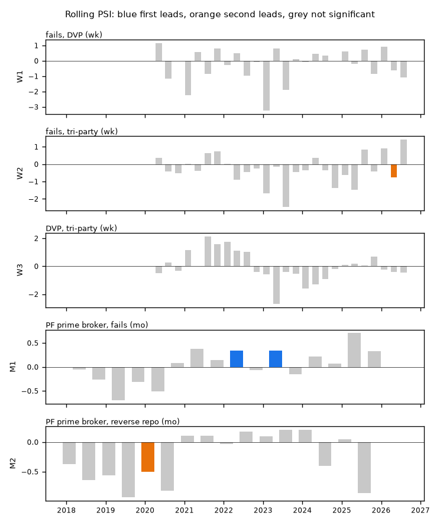

Methods scout
Picked methods are in build, so today scouts one new method. From EEG brain-connectivity work: the phase slope index, a lead-lag test that reads direction from how the phase of the cross-spectrum tilts with frequency and cannot be fooled by something that moves both series in the same week.
The short version
- Phase slope index · neuroscience (EEG effective connectivity) · Q1 · interesting · home field: well established as a linear lead-lag measure, contested as causal direction · exotic-transfer. Top-pick avenue: Math (a small-sample-calibrated test).
- Picked methods. codyn step 2 (share-space variance ratio) did not pass its pre-registered test and is dropped from the library; step 3 (speed) passed. See the research-to-production tracker.
Phase slope index: research card →
On the card: the usual rolling correlation against the PSI strip chart on the same windows; the Granger comparison with simulated false-alarm rates; the home-field reproduction (planted delay and mixed sources); stability across halves; the walk-forward benchmark against OLS, ARDL and SARIMAX(X); the engineering test; and three secret-sauce avenues.

Found via · web search 2026-11-24 ~2:35 PM ET → Nolte et al. (2008), arXiv:0712.2352; critique search ~2:40 PM ET → Haufe et al. (2013). Novelty: exotic-transfer.
Data. Public aggregates on the box: NY Fed fails, OFR repo, DVP and tri-party volume (weekly 2018-05..2026-09, 2 missing weeks interpolated), SEC Form PF tab 8.27 (monthly 2013..2025). Descriptive; nothing private.
| Pair | n · segments | PSI z (Holm p) | Granger p (x→y, y→x) | First / second half z |
|---|---|---|---|---|
| W1 fails · DVP | 437 wk · 15 | −0.61 (1.00) | 0.34, 0.052 | 0.73 / −0.73 |
| W2 fails · tri-party | 437 wk · 15 | −0.09 (1.00) | 0.023, 0.14 | −0.10 / 0.39 |
| W3 DVP · tri-party | 437 wk · 15 | −1.22 (1.00) | 0.30, 0.98 | −0.05 / −1.42 |
| M1 PF prime broker · fails | 152 mo · 11 | 1.81 (0.49) | 0.50, 0.36 | −0.48 / 0.53 |
| M2 PF prime broker · reverse repo | 155 mo · 11 | −0.28 (1.00) | 0.77, 0.042 | −0.90 / −0.71 |
| M3 PF prime broker · DVP | 91 mo · 6 | 0.91 (1.00) | 1.0, 1.0 | too few segments |
| M4 PF prime broker · tri-party | 136 mo · 10 | 0.01 (1.00) | 0.44, 0.51 | −3.11 / 0.35 |
Computed. Positive z: first series leads. Pre-registered (merged in PR #105 before the run): runs/2026-11-24-build/PREREG.md. Code: runs/2026-11-24/psi. Size on our sampling (1,000 matched-persistence pairs): PSI 0.6% / 3.1% (weekly fails × DVP, independent / shared shock), 1.2% / 4.1% (monthly prime broker × reverse repo); Granger either direction 13.4% / 12.1% and 6.1% / 7.0%.
- Question rotation. Q1 and Q2 last ran on 11-22 and Q3 on 11-23; Q1 chosen because its lead/lag sub-question is what PSI answers and the data are on the box. Picked methods exist, so one new method today.
- Pre-registration. Written at about 2:28 PM ET before any run of PSI on our data; merged before the runs. Deviations, labelled: ARDL uses lags 1..3 of reverse repo (lag 0 is unknown at forecast time; a first run silently fell back to OLS because of that, fixed before reporting); rolling-window significance uses a t reference on K − 1 degrees of freedom because windows hold only 3–4 segments; weekly data run to 2026-09-23 (the pre-registration said 2025-12-31). Failed or not met: parity with mne-connectivity (≤ 1e-8); PSI size band for independent pairs; the benchmark bar.
- Does not contradict 11-22. The ICCF run found DVP volume following Form PF reverse repo in detrended log levels; today's pairs are log changes and did not include reverse repo × DVP.
- Watchlist (not run): dPLI, wPLI / lagged coherence, time-reversed Granger surrogates, PSI vs conditional mutual information (2024). See watchlist.md.
- Data Jared would need to supply. Nothing private. Still missing for Q1: a refreshed CFTC TFF series (the lab copy has a gap from 2025-12-30) and Form PF publication dates.